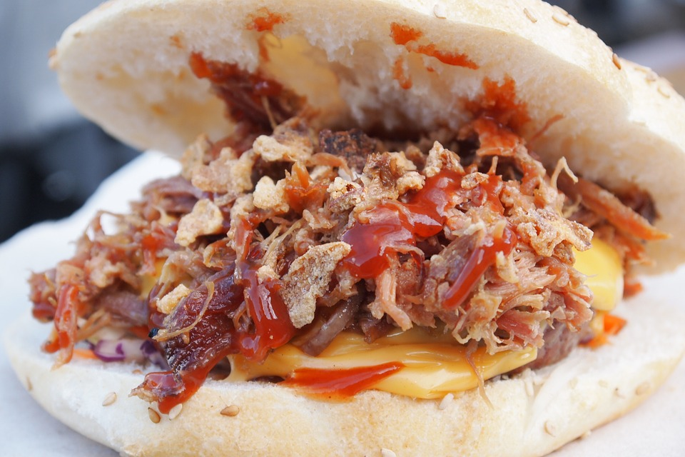

Memphis Pulled Pork

Description
This pulled pork recipe will simply melt in your mouth with barbeque sweetness.
Ingredients
- 1 onion, thinly sliced
- 6 cloves garlic, peeled
- 2 (14 ounce) cans beef broth
- 1 (18 ounce) bottle barbeque sauce
- ⅓ cup brown sugar
- ⅓ cup cider vinegar
- ½ teaspoon ground black pepper
- 1 (4 pound) Boston butt pork shoulder roast
- 2 tablespoons cornstarch
- 3 tablespoons water
Directions
- Spread onion slices and garlic cloves in the bottom of a slow cooker; stir in beef broth, barbeque sauce, brown sugar, cider vinegar, and pepper. Add pork roast.
- Cover and cook on Low for 6 to 8 hours. Remove pork from slow cooker. Strain juices and return to the slow cooker. Mix water and cornstarch in a bowl; stir into juices until sauce is thickened.